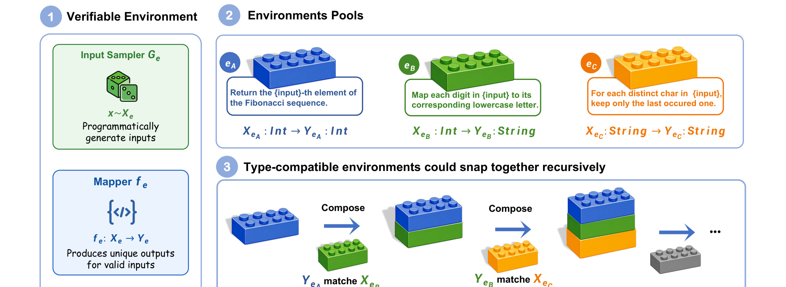
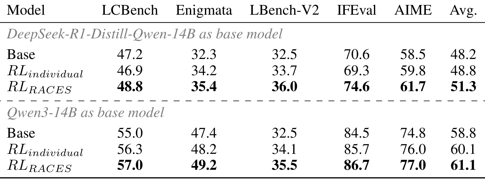
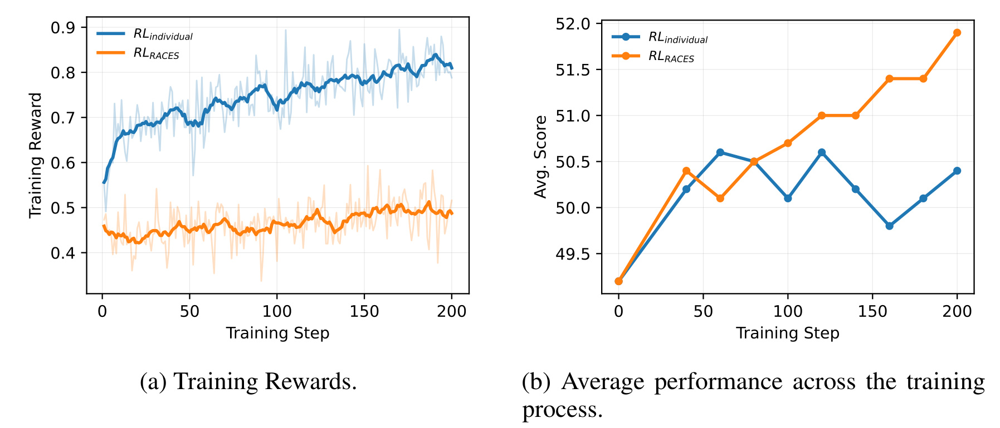
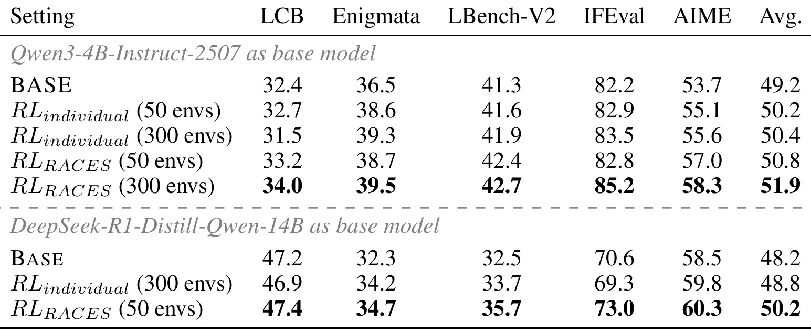
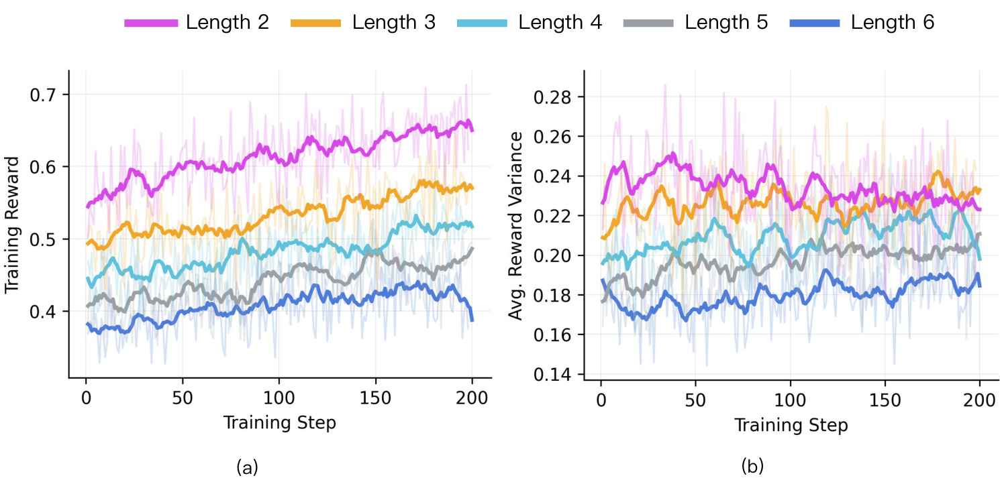
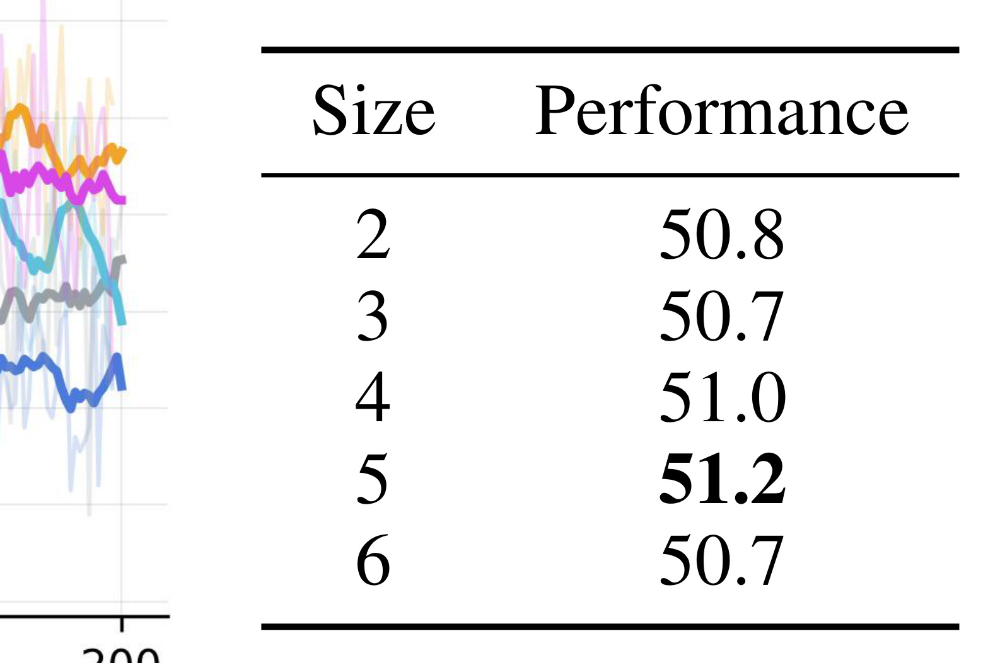

Verifiable Environments Are LEGO Bricks: Recursive Composition for Reasoning Generalization
论文入口：arXiv:2606.12373。这篇论文的一作 Hao Xiang 同时标注 University of Chinese Academy of Sciences 与 Chinese Information Processing Laboratory, Institute of Software, Chinese Academy of Sciences，合作方包括阿里 Qwen Team；因此本地目录沿用“中科院-RACES”。论文主问题是：RL with verifiable rewards 已经证明可以提升大模型推理能力，但人工或逐个合成可验证环境的方式只能线性扩展环境池，难以持续提供足够多样、足够难、又能自动验收的训练任务。RACES 的核心想法是把每个 verifiable environment 当成有类型接口的 LEGO brick：如果前一个环境的输出类型等于后一个环境的输入类型，就能自动拼接成一个新的可验证环境，并继续递归扩展。代码/项目页核验：arXiv 页面与 PDF 首页未提供独立代码仓库，本轮不生成项目链接。
1. 背景和问题
大模型推理训练近两年的一个明显趋势，是从只依赖人类偏好或参考答案，转向更大规模地使用可验证奖励。数学题、代码题、逻辑谜题、字符串变换、表格变换这类任务有一个共同点：给定输入和模型输出后，可以用程序或确定规则判定答案是否正确。RLVR 的优势就在这里，训练信号不必完全来自人工打分，也不必只依赖一个静态文本答案；只要环境能生成输入、执行真实映射、描述问题并验证输出，就可以稳定地产生 reward。RACES 站在这个背景上，关心的不是再提出一种新的 RL 优化器，而是追问：这些可验证环境本身如何扩展。
已有做法通常有两类。第一类是人工或半自动地写出大量独立环境，每个环境对应一个固定任务族，例如某类代码执行、某类序列变换、某类谜题。第二类是自动合成单个环境，用 LLM 或程序模板生成新的 mapper、descriptor 和 verifier。它们都能增加环境数量，但增长方式近似线性：投入一次构造成本，得到一个新环境。问题在于，推理泛化需要的不只是更多样本，还需要更丰富的任务结构。一个环境如果只训练模型完成单步变换，模型可能学会该环境的局部模式，却未必学会长链状态传递、子问题分解、顺序恢复和干扰项选择。
论文把这个瓶颈称为 environment quantity scaling 的线性限制。假设我们已经有 300 个可验证环境，如果只是分别从这 300 个环境采样训练题，那么训练数据仍然围绕 300 个原子任务族展开；如果继续扩到 600 个，就要再构造 300 个独立环境。RACES 的思路更像组合数学：只要环境接口有类型，环境之间就可能形成路径；一条长度为 t 的路径不只是 t 个环境的简单集合，而是一个新的复合任务，要求模型把中间状态保留下来、按正确顺序执行变换，并在最终输出上通过 verifier。这样，有限环境池可以诱导出远大于原始数量的复合环境空间。
这篇论文标题里的 LEGO bricks 很准确。LEGO brick 的价值不只是每块积木本身，而是标准接口让它们可以反复拼接。RACES 对 verifiable environment 做了同样的抽象：每个环境有输入类型、输出类型、生成器、执行映射、自然语言描述器和验证器；当一个环境的 codomain 与另一个环境的 domain 匹配时，就能组合。这个组合仍然是可验证的，因为每个 mapper 都是确定性的，每一步中间输出都可以由程序执行得到，最终答案也可以由组合后的 verifier 检查。
为什么这对 LLM 推理泛化重要？因为很多真实推理任务并不是单步题，而是把多个局部变换按正确顺序组织起来。数学证明要维护中间变量，代码调试要追踪状态，表格处理要先筛选再排序，工具规划要先选工具再串联调用。只训练独立环境容易让模型过拟合单个转换族；训练复合环境则可以迫使模型学习更高阶的控制能力。RACES 不是简单把样本变长，而是改变训练题的结构：同一批 base environments 被组合成 sequential、parallel、sort、select 等不同模式，分别覆盖状态传递、分支独立处理、顺序推断和干扰项筛选。
这也解释了论文的实验设计。作者没有把 RACES 只评在训练环境本身，而是使用六个未见 benchmark 检查泛化，包括 LiveCodeBench、Enigmata、LongBench-v2、IFEval 和 AIME。这个选择很关键，因为如果复合环境只让模型更会解训练池里的玩具任务，意义会很有限；论文想证明的是，复合环境能把训练信号迁移到更广义的 reasoning benchmarks。换句话说，RACES 的目标不是构造一个巨大题库供模型记忆，而是用可执行组合生成更难的学习压力，让模型在没有见过的推理任务上也更稳。
还有一个工程侧动机容易被忽略。可验证训练数据的瓶颈不只在数量，也在可控性。纯文本合成题可以无限生成，但答案验证往往不稳定；真实程序环境可以验证，但人工写环境代价高。RACES 试图把已经可信的环境池复用起来，既保留程序验证的确定性，又通过组合扩大难度和结构空间。它把“扩环境”从写新环境变成搜索类型兼容路径，再把路径包装成模型题目。这个转向让环境池更像一个可计算的图，而不是一组孤立模板。
因此，本文的问题可以概括为三层：第一，如何把可验证环境标准化成可组合对象；第二，如何自动发现并质量控制可执行的组合路径；第三，如何把同一条组合路径转成不同训练问题，使模型学习多种推理 pattern。后面的 RACES 方法基本沿着这三层展开。
2. 方法
2.1 可组合环境的接口标准化
RACES 首先规定每个 verifiable environment 不是一个松散的题目模板，而是一个带接口的对象。论文用一个四元组表示环境：
符号解释：$G_e$ 是 input sampler，用来从输入空间 $X_e$ 中生成有效输入；$f_e$ 是 deterministic mapper，把输入映射到输出空间 $Y_e$；$D_e$ 是 problem descriptor，把输入渲染成模型可读的自然语言问题；$V_e$ 是 programmatic verifier，用来判断模型输出是否等于或满足真实输出。这个四元组把训练环境拆成了生成、执行、描述、验证四个职责。对 RACES 来说，最关键的是 mapper 的 domain 和 codomain，也就是环境的类型签名：
符号解释：$X_e$ 是环境可接受的输入类型，$Y_e$ 是环境执行后产生的输出类型，$\tau_e$ 是 RACES 在搜索时读取的接口摘要。这个类型签名决定了环境能否和其他环境拼接。如果环境 A 输出字符串，环境 B 输入字符串，那么 A 后面可以接 B；如果环境 A 输出整数列表，而环境 B 需要日期对象，二者就不能直接拼。类型签名把“能不能组合”从语义猜测变成程序可检查条件。只要这个条件成立，组合路径就有机会成为一个新的可验证环境。

图 1 的裁图保留了方法图中最核心的接口与拼接区域。左侧把单个 verifiable environment 拆成 input sampler、mapper、problem descriptor 和 verifier；中间展示不同环境的输入/输出类型如何像 LEGO brick 一样 snap together。原图下半部分还展示四类 operator，本笔记在 2.4 节单独展开。图里最值得注意的是，RACES 没有把环境组合视为纯文本拼接，而是要求 mapper 的输出类型与下一个 mapper 的输入类型匹配。这样构造出的复合环境可以被程序执行、可以得到真实中间状态，也可以被自动验收。
这种标准化有两个直接好处。第一，它把环境池从“题目集合”升级为“有向类型图”。节点可以理解为数据类型，边是一个环境 mapper；从一个类型走到另一个类型的路径就是一个可执行组合。第二，它让后续组合不需要重新写 verifier。每个原子环境已经有自己的 verifier，组合任务的目标输出可以通过顺序执行 mapper 得到，模型输出只需和目标状态或中间状态比较即可。也就是说，RACES 的扩展能力来自接口标准化，而不是来自一个额外的神经生成器。
这里还有一个细节：descriptor 和 verifier 的职责分离。descriptor 负责把输入变成自然语言题面，verifier 负责判断答案。组合以后，训练题可以只展示部分路径、打乱路径、加入干扰环境，descriptor 的组织方式会随 operator 改变；但底层真实执行仍由 mapper 给出。这种分离让 RACES 能复用同一条组合路径产生不同题型，而不是每生成一种题型都重新定义环境。
2.2 递归拼接：从类型匹配到组合闭包
在接口标准化之后，RACES 的第二步是定义环境组合。若两个环境 $e_i$ 和 $e_j$ 的类型签名分别为 $\tau_{e_i}=(X_{e_i},Y_{e_i})$ 与 $\tau_{e_j}=(X_{e_j},Y_{e_j})$，当 $Y_{e_i}=X_{e_j}$ 时，二者可以组合。组合后的 mapper 写成：
符号解释：$e_i$ 与 $e_j$ 是两块待拼接环境，$f_{e_i}$ 与 $f_{e_j}$ 是各自的确定性执行函数，$\circ$ 表示函数复合。这个公式的含义很朴素：先把输入交给 $e_i$，得到中间输出，再把中间输出交给 $e_j$。因为两个 mapper 都是确定性的，组合 mapper 也是确定性的；因为每一步类型匹配，组合 mapper 的整体输入输出接口也可以明确写出。论文进一步把长度为 $t$ 的组合路径表示为：
符号解释：$\pi_t$ 是长度为 $t$ 的环境路径，$F_{\pi_t}$ 是整条路径对应的复合 mapper，路径起点输入类型来自 $e_1$，终点输出类型来自 $e_t$。其中 $F_{\pi_t}$ 的类型签名是 $(X_{e_1},Y_{e_t})$。如果还有另一个环境 $e'$ 满足 $X_{e'}=Y_{e_t}$，就可以继续接在后面，得到 $f_{e'}\circ F_{\pi_t}$。这就是论文所谓的 compositional closure：组合后的对象仍然像一个环境一样有输入类型、输出类型和确定映射，因此可以继续参与组合。
这层闭包性质是 RACES 扩展能力的数学基础。假设环境池中很多类型能互相衔接，那么长度为 2、3、4、5 的路径数量会快速增长。每条路径不仅对应一个更长的 mapper 链，也对应一个新的训练问题候选。RACES 的“beyond linear growth”并不是说免费生成无限有用数据，而是说一旦环境池存在足够多类型兼容边，组合路径数量会超过环境数量的线性增长。
不过，类型匹配只是必要条件，不是充分条件。两个环境的类型可能匹配，但组合后可能过于简单、过于重复、执行失败，或者中间状态不适合作为训练题。论文因此没有停在类型公式，而是在 3.3 节加入了自动搜索和质量控制。组合闭包提供候选空间，搜索和过滤决定哪些组合真正进入训练数据。
2.3 随机广度优先搜索和质量控制
RACES 以 frontier-based search 构造复合环境。论文把一条组合轨迹写为：
符号解释：$x_0$ 是初始输入，$e_1,\ldots,e_t$ 是被选中的环境序列，$y_i$ 是第 $i$ 步程序真实执行得到的中间状态。这个记录包含初始输入、环境序列和每一步真实中间输出。给定当前 frontier state $y_t$，系统检索所有 domain compatible candidates：
符号解释：$C(y_t)$ 是当前状态可接续的候选环境集合，$\operatorname{type}(y_t)$ 是中间状态的类型。如果候选环境 $e$ 可以在 $y_t$ 上成功执行，就把轨迹扩展为：
符号解释：$\operatorname{extend}$ 表示把一个新环境追加到已有轨迹末尾，并把新输出 $f_e(y_t)$ 记录为下一 frontier state。这套搜索类似在环境类型图上做随机广度优先遍历。随机性保证路径不会只集中在少数高出度类型上；广度优先保证较短组合先被探索，便于控制 composition size；执行检查保证每条路径不仅类型上匹配，而且实际可运行。论文还加入最大组合深度、单步执行时间限制和每个 frontier 的扩展上限，避免搜索爆炸和异常环境拖垮构造流程。
质量控制的作用也很重要。可验证环境虽然有程序 mapper，但组合路径可能出现无效中间状态、重复模式或过弱题目。RACES 会检查中间状态可执行性和结果有效性，确保复合环境能被转成训练题。这个环节决定了 RACES 不是把任何类型相同的环境硬串起来，而是生成可执行、可验证、难度可控的复合任务。
从训练视角看，轨迹里的中间状态 $y_i$ 是关键资源。SEQUENTIAL 可以要求模型预测全部中间状态；SORT 可以隐藏正确顺序，让模型恢复一个能从 $x_0$ 到 $y_t$ 的排列；SELECT 可以加入干扰环境，让模型在候选集中找出一条可行路径。如果没有程序执行得到的 $y_i$ 和最终 $y_t$，这些训练题就无法自动验收。RACES 的搜索阶段其实是在为后续 operator 准备结构化监督信号。
从实现角度看，RACES 的搜索阶段还有一个容易被低估的约束：组合路径不能只在类型上成立，还要在执行上稳定。许多程序环境即便输入类型匹配，也可能因为边界值、超时、空输出、异常格式或 verifier 预期不一致而失效。因此随机广度优先搜索并不是一个单纯枚举器，而是一个持续执行、检查、淘汰的构造器。每次扩展都要真实运行 mapper，并把成功输出写回轨迹；失败路径不会进入后续 operator。这保证了最终训练题有程序真值，而不是由语言模型臆测出来的链式答案。
这个设计对 reward 质量很关键。SEQUENTIAL 的前缀奖励依赖每一步中间状态都可被 verifier 检查；SORT 和 SELECT 的最终奖励依赖目标状态 $y_t$ 确实由某条路径到达。如果搜索阶段没有保存完整轨迹，后续只能验证最终字符串，无法知道模型在哪一步错，也无法构造带中间监督的题。RACES 把轨迹当成数据结构保存下来，使得同一条路径既可以支持稠密一点的 SEQUENTIAL reward，也可以支持更稀疏、更规划化的 SORT/SELECT reward。
另外，随机广度优先而不是纯深度优先也符合训练数据构造需要。纯深度优先可能很快陷入少数类型链，生成大量相似的长路径；纯穷举则会在高出度类型附近爆炸。论文采用的受限随机 BFS 在 diversity、可控深度和计算预算之间折中：它让不同起点、不同类型和不同长度都有机会进入池子，同时通过最大深度、执行时间和 frontier cap 控制生成成本。这部分虽然不像 operator 公式那样显眼，却决定了 RACES 是否能稳定扩出数万条复合环境。
2.4 四类 composition operators 如何变成模型训练题
有了组合轨迹以后，RACES 还需要把它转成模型可见的问题。论文实现了四类代表性 operator：SEQUENTIAL、PARALLEL、SORT 和 SELECT。它们共享同一批复合环境，但呈现给模型的信息、要求模型预测的对象和 reward 形式不同。
SEQUENTIAL 是最直接的形式。给定初始输入 $x_0$ 和有序 descriptor 序列 $(D_{e_1},\ldots,D_{e_t})$，模型需要预测所有中间输出 $(\hat{y}_1,\ldots,\hat{y}_t)$。奖励按最长正确前缀计算：
符号解释：$V_{e_i}(\hat{y}_i,y_i)$ 是第 $i$ 个环境的 verifier 结果，$K$ 是遇到第一处错误前的连续正确步数，$t$ 是组合长度。这里 $K$ 表示从第一步开始连续正确的长度。如果模型第 1 到第 3 步都对，第 4 步错，那么它仍能得到 $3/t$ 的部分奖励；如果第一步就错，则奖励接近 0。这个 reward 设计鼓励模型维护状态链，因为后面步骤依赖前面输出。它对应的 reasoning pattern 是 state carry-over。
PARALLEL 则把多个环境作为相互独立的分支，要求模型分别给出输出。奖励是各分支 correctness 的平均：
符号解释：$R_{Par}$ 把每个分支的 verifier 结果平均，因而不会因为某一支错误直接清零全部奖励。它训练的是子问题分离能力。模型需要识别每个 descriptor 对应哪个输入和输出，而不是把所有步骤串成一条链。PARALLEL 的难点不在中间状态传递，而在并行组织和避免把不同分支的规则混淆。
SORT 更像顺序恢复题。系统给出打乱的环境集合、初始输入和目标输出，模型需要输出一个排列 $\hat{\sigma}$，使得按该顺序执行环境后到达目标。奖励检查：
符号解释：$\hat{\sigma}$ 是模型预测的环境排列，只有该排列对应的复合 mapper 把 $x_0$ 变到目标 $y_t$ 时奖励为 1。这类任务要求模型推断哪个环境应该先执行、哪个环境应该后执行。它训练的是 order inference，而不是单个环境的局部规则。对模型来说，SORT 往往比 SEQUENTIAL 更难，因为题面不直接告诉路径顺序，只给出可用部件和目标状态。
SELECT 在 SORT 的基础上加入干扰项。论文定义候选集合：
符号解释：$A_{\pi}$ 是模型看到的候选环境集合，包含真实路径环境和干扰集合 $B_{\pi}$；$k$ 是模型最终选择出的环境数量。其中 $B_{\pi}$ 是 distractor set。模型需要从候选集合中选择若干环境并排序，使得组合后达到目标：
SELECT 的干扰项不是随机无关文本，而是可以在某些中间状态上执行的环境，因此比普通负例更难。模型不仅要恢复顺序，还要决定哪些环境不该用。这个 operator 对应工具选择、规划搜索和抗干扰推理，和真实 agent 任务很接近。
2.5 为什么这些 operator 对应不同 reasoning pattern
四个 operator 的价值在于，它们从同一条底层组合路径诱导不同训练压力。SEQUENTIAL 强迫模型沿路径传播中间状态；如果某一步错，后续状态也会错。PARALLEL 强迫模型把多个局部任务隔离处理；如果它把一个分支的规则套到另一个分支，就会失分。SORT 隐藏路径顺序，要求模型根据 domain/codomain 或变换效果推断可行排列。SELECT 进一步加入可执行干扰项，要求模型既选对部件又排对顺序。
这也是 RACES 比“把题目变长”更有意义的地方。简单地把多个题拼在一起，可能只得到一个长 prompt；RACES 的 operator 明确规定了题目呈现、目标输出和 reward 计算，使得组合任务具有可验证结构。训练时，模型面对的不只是更多 token，而是更复杂的控制问题。不同 operator 的 reward 还可以形成互补：SEQUENTIAL 的前缀奖励比较稠密，SORT 和 SELECT 的最终验证更稀疏但更接近规划任务，PARALLEL 则提供分支独立性的信号。
论文使用 300 个 individual environments 实现 RACES，并从中生成数万条 composite environments。这里的关键不是 300 这个绝对数，而是它作为 base environment pool 的复用效率。若只有 individual RL，300 个环境基本就是 300 个任务族；若使用 RACES，同一批环境可以通过路径、operator 和 composition size 形成多种训练分布。实验部分正是围绕这个主张展开：RACES 是否真的带来泛化提升，是否比 individual RL 更高效，composition size 如何影响训练难度和最终效果。
把这五个模块连起来看，RACES 的方法并不是先让 LLM 生成复杂题面，再祈祷答案可验证；它从可验证程序环境出发，先用类型签名定义可组合边，再用真实执行确认路径，再用 operator 把路径转为模型任务。这样的顺序保证了训练样本的可审计性。每道题都能追溯到原子环境、组合路径、中间状态和验证规则；如果某类组合过难或带来噪声，也可以回到 composition size、operator mixture 或环境池类型覆盖上做定位。对自动化论文笔记而言，这一点是 RACES 最值得记录的工程贡献。
3. 实验结果
3.1 14B 主结果：复合环境比 individual RL 更能泛化
论文的主实验比较 Base、RLindividual 和 RLRACES。两个 14B backbone 分别是 DeepSeek-R1-Distill-Qwen-14B 和 Qwen3-14B。RLindividual 与 RLRACES 使用相同数量的训练实例和训练步数，环境池也保持一致；区别在于前者从 individual environments 直接采样，后者从 RACES composite environments 采样。评测使用六个未见 benchmark：LiveCodeBench、Enigmata、LongBench-v2、IFEval、AIME 2024/2025 平均分，以及整体 Avg。

Table 1 给出核心结论。DeepSeek-R1-Distill-Qwen-14B 的 Base 平均分为 48.2，RLindividual 提到 48.8，而 RLRACES 提到 51.3，平均提升 3.1 点。分项看，RACES 在 LiveCodeBench、Enigmata、LongBench-v2、IFEval 和 AIME 上都高于 Base，尤其 IFEval 从 70.6 到 74.6，LongBench-v2 从 32.5 到 36.0。Qwen3-14B 上也类似，Base 平均 58.8，RLindividual 60.1，RLRACES 61.1。这个结果说明，组合环境不是只增加训练噪声；在相同训练规模下，它比 individual RL 更能提升未见任务泛化。
这里需要注意一个对照细节。RLindividual 也不是无效，它在两个 backbone 上都带来一定收益。论文真正证明的是，在同样环境池和训练预算下，把环境组合起来训练，比只训练原子环境更有泛化价值。这支持了作者的问题设定：瓶颈不只是 reward 是否可验证，也不只是样本数量，而是训练任务结构是否能迫使模型学习更一般的推理控制。
3.2 训练奖励不等于泛化：RACES 更难但更有用
主结果之后，论文分析训练过程。一个直觉可能是：RL 训练中奖励升得越快，模型泛化越好。但 Figure 2 显示这个直觉在这里不成立。Qwen3-4B-Instruct-2507 上，RLindividual 的训练 reward 更快上升，也整体更高，说明 individual environments 更容易被策略优化；RLRACES 的 reward 增长更慢，任务难度更高。

Figure 2 左图展示 smoothed training reward，右图展示训练过程中平均性能。左图中 individual RL 的 reward 曲线更高；右图中 individual RL 早期平均分上升较快，但很快在约 50.5 附近平台化。RACES 则相反，早期不占优势，但随着训练继续推进，平均性能持续增长，到 step 200 时达到 51.9，而 individual RL 约为 50.4。这个现象说明，训练环境奖励高不一定代表学到了可迁移推理。更容易的 individual environments 可能让模型更快适应训练分布，却不能继续转化为未见 benchmark 增益。
这也是 RACES 的一个关键论点：组合环境给出的 reward 更难拿，但它训练的能力更接近泛化所需的能力。模型必须在复合路径中维护中间状态、拆分子任务、恢复顺序、排除干扰项；这些能力在 LiveCodeBench、LongBench-v2、AIME 或 Enigmata 中都有对应影子。相比之下，单个 environment 的 reward 可能更稠密、更容易优化，却更容易停留在局部模式。
3.3 环境利用效率：50 个 base environments 可以逼近 300 个 individual environments
RACES 的另一个主张是提高 environment utilization。为验证这一点，论文比较了 50 和 300 个 initial environments 下的 individual RL 与 RACES。这个实验非常重要，因为它把“组合扩展”从性能提升转化为资源效率问题：如果组合真的有用，那么较小 base pool 经过组合后，应该能达到甚至超过更大 individual pool 的效果。

Table 2 显示，Qwen3-4B-Instruct-2507 的 Base 平均分是 49.2。RLindividual 使用 50 个环境时平均分 50.2，使用 300 个环境时 50.4；而 RLRACES 只使用 50 个 base environments，就达到 50.8。DeepSeek-R1-Distill-Qwen-14B 上也类似，Base 48.2，RLindividual 300 环境为 48.8，RLRACES 50 环境达到 50.2。这个对照直接支撑摘要里的效率说法：RACES 用更少 base environments，通过组合生成更有结构的训练任务，可以达到或超过大量 individual environments。
从方法角度看，这个结果比单纯主结果更能说明 RACES 的贡献。若 RACES 只是靠更多训练样本取胜，那么减少 base environments 后优势应明显消失；但表中 RACES(50) 仍然强于 individual(300)，说明组合操作改变了训练分布的有效性。同一个原子环境通过不同路径和 operator 出现，可以让模型看到更多状态转换上下文，而不是重复做同一类单步题。
当然，这个实验也有边界。50 个 base environments 能超过 300 个 individual environments，并不意味着环境越少越好；前提是这些环境之间存在足够 domain/codomain 兼容关系，且组合路径经过质量控制。若环境池类型过于分散，无法形成长路径，RACES 的组合收益会降低。因此，环境池的类型设计和覆盖范围本身成为后续工程重点。
3.4 组合深度的可控难度：不是越长越好
RACES 还分析 composition size。作者固定环境池为 300，并在 SEQUENTIAL operator 上改变组合长度，从 2 到 6。这个实验回答两个问题：更长组合是否更难训练；更长组合是否一定带来更好泛化。Figure 3 和 Table 3 给出答案。

Figure 3 左图显示，composition size 越大，训练 reward 越低，说明更长路径确实更难优化；这不是普通样本长度增加，而是每个环境 mapper 的输出都会成为下一步输入，任何一步状态计算错误都会改变后续 verifier 看到的对象。右图展示 average reward variance，也反映不同 size 对 advantage 信号的影响：size 增大后，rollout 之间的可区分奖励信号变弱，GRPO 能利用的优势估计更不稳定。这个结果符合 RACES 的设计逻辑：composition size 是难度旋钮，较短组合提供可学习的状态传递练习，较长组合则迫使模型同时处理中间状态保持、操作顺序和错误传播。论文因此不是简单建议“越长越好”，而是提醒训练者要让组合任务处在模型仍能从 reward 中学习的区间。

Table 3 进一步说明，泛化收益不是随 size 单调上升。size 2 的平均分是 50.8，size 3 是 50.7，size 4 是 51.0，size 5 达到 51.2，size 6 又降到 50.7。这个非单调曲线和 Figure 3 的训练曲线可以放在一起读：size 2/3 的任务虽然更容易拿 reward，但组合深度有限，训练信号更接近 individual environment 的短链变体；size 4/5 让模型看到更长的状态 carry-over 和顺序依赖，因此泛化分数上升；size 6 则可能超过 Qwen3-4B 分析模型在当前训练步数下可有效吸收的难度，reward 变稀、错误传播变长，最终性能回落。RACES 的工程启示不是“把组合拉到最长”，而是要联合调 composition size、operator mixture 和训练预算，使任务处在可学习但有挑战的区间。
3.5 qualitative pattern analysis：RACES 学到的不是局部规则
论文还用 qualitative cases 解释为什么 RACES 能带来泛化。AIME 的 2×2 grid-coloring 例子中，Base 模型能建立枚举思路但在填表时混淆变量，RLindividual 在内部边颜色更新上出现局部不一致；RLRACES 则引入紧凑函数，把内部边颜色对映射到边界赋值数量，并用独立分组交叉检查总数。Enigmata 的 list-transformation 例子中，Base 和 RLindividual 都容易沿着表面规则循环试探，RLRACES 更能排除不满足早期例子的假设。
这些案例和 operator 设计相呼应。SEQUENTIAL 训练状态 carry-over，所以模型更少在中间变量更新上断裂；PARALLEL 训练子问题分离，所以模型更少把一个分支的规则错套到另一个分支；SORT 训练顺序推断，所以模型更能识别变换的先后依赖；SELECT 训练干扰项筛选，所以模型更能拒绝表面上可执行但不能通向目标的候选。虽然这些 qualitative evidence 不能替代大规模统计，但它们解释了 Table 1 的收益来源：RACES 的训练信号更接近真实推理中的控制结构。
4. 总结
RACES 的贡献可以概括为一句话：把可验证环境从孤立任务模板变成有类型接口、可递归组合、可自动验证的训练积木。它通过四元组标准化环境，用 domain/codomain 类型匹配构造组合闭包，再通过 SEQUENTIAL、PARALLEL、SORT、SELECT 四类 operator 把组合轨迹转成不同推理题型。实验上，RACES 在两个 14B backbone 上都优于 individual RL，并且在 50 个 base environments 下达到或超过 300 个 individual environments 的训练效果，说明组合结构确实提高了环境利用效率。
我认为这篇论文最有价值的点不是“又做了一个数据合成框架”，而是把 verifiable environment 的扩展问题形式化为接口组合问题。一旦环境有了类型签名，环境池就可以被看成图；一旦组合路径可以自动执行和验证，训练题就可以在不牺牲 reward 可信度的前提下变得更复杂。这种思路对后续构造 agent 工具环境、程序推理环境、表格/文档变换环境都很有参考价值。
它也有几个明显局限。第一，RACES 依赖已有环境的类型覆盖和质量，如果 base pool 的 domain/codomain 设计不好，组合图会稀疏或路径质量低。第二，论文主要在文本化可执行环境上验证，尚不清楚能否直接扩展到真实外部工具、交互式网页、长时程 agent 环境。第三，composition size 的结果说明难度需要调参，过长组合会伤害学习，因此自动选择难度区间仍然是开放问题。第四，SELECT 的干扰项虽比随机负例更强，但仍由环境池生成，距离真实任务中的模糊、噪声、权限约束和部分可观测状态还有差距。
后续如果要复现或使用 RACES，我会优先检查三件事。第一，环境池的类型系统是否足够细，不能把所有东西都粗暴标成 string，否则组合会变多但语义变弱。第二，组合路径的质量控制是否能过滤无意义、重复或过短捷径，否则训练数据会被容易题污染。第三，operator mixture 和 composition size 是否与目标模型能力匹配，不能只追求路径数量。对强模型，可以提高 SORT/SELECT 比例和中等长度组合；对弱模型，可能需要更多 SEQUENTIAL 前缀奖励作为过渡。
整体看，RACES 给 RLVR 数据扩展提供了一个很清晰的方向：不要只问还能生成多少新题，而要问已有可验证环境能否被系统性重组为更高阶的推理任务。它的实验结果说明，复合环境虽然训练奖励更难拿，却更可能转化为未见 benchmark 的泛化提升。这正是当前推理训练中很需要的信号：可验证、可扩展、可控难度，并且不完全依赖人工继续堆题。